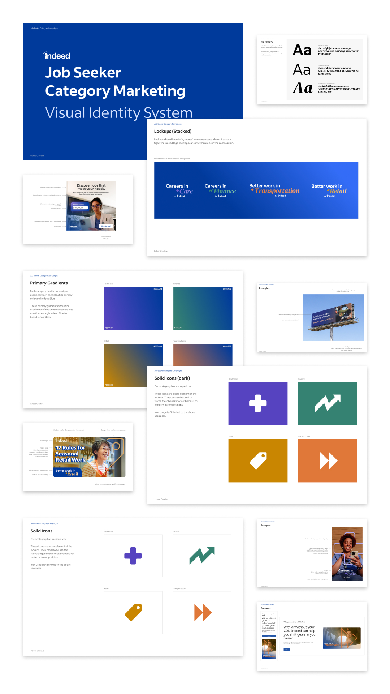
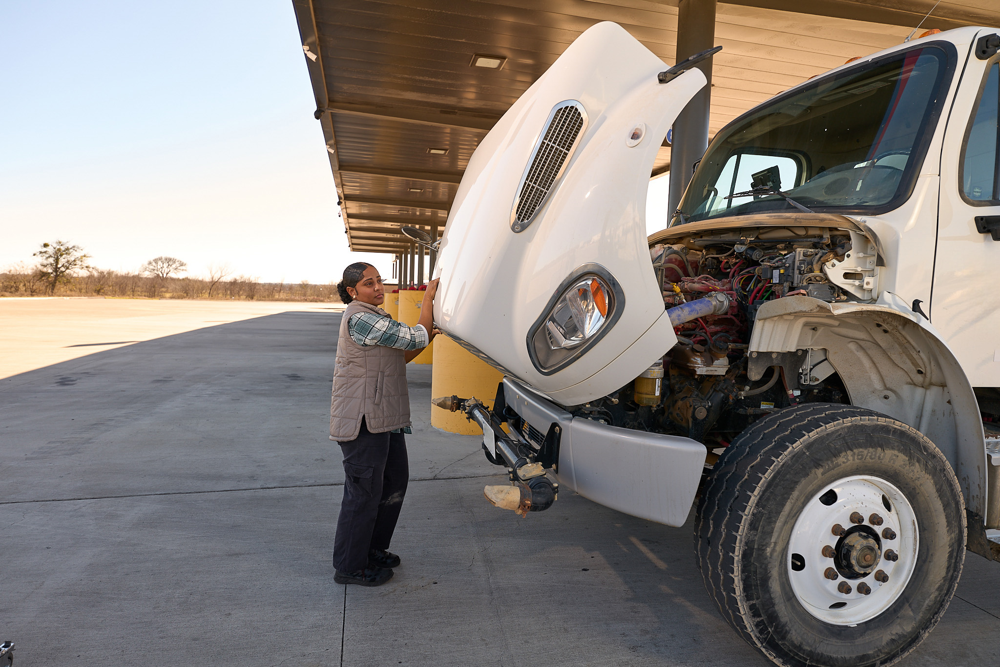
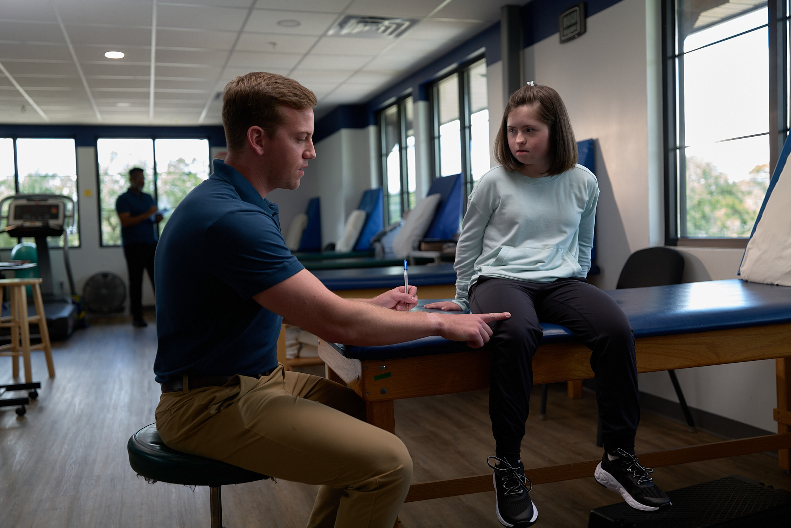
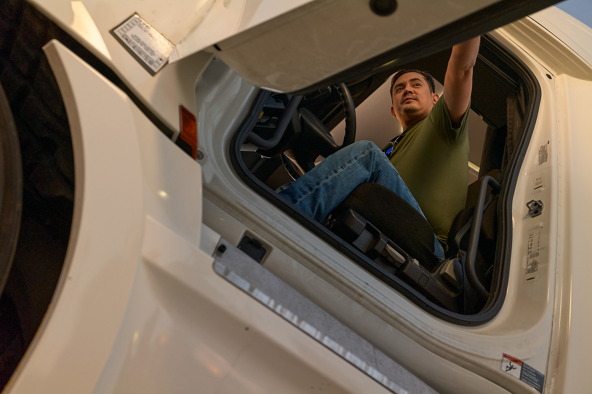

Overview
One system. 4 industries. Unmistakably Indeed.
Category Campaigns at Indeed are a cross-channel, on-brand design system built to speak directly to priority job categories — industries like healthcare, transportation, and finance and accounting — that are often supply-constrained. The challenge: make each industry feel seen with its own visual identity, while keeping the whole system unmistakably "Indeed."
The system uses consistent naming structures — "Careers in [Category]" for career-focused work and "Better Work in [Category]" for hourly and temporary roles — with corresponding lockups that flex across paid social, organic social, YouTube, paid display, print, events, and beyond. I led brand design and art direction across the full system.
3+
Priority job categories: Healthcare, Transportation, Finance & Accounting
6+
Channels: paid social, organic, display, YouTube, print, events
∞
Modular lockups that scale to any category

The Campaigns
Four industries. Four distinct identities.
Each sub-campaign gets its own visual identity, owned photography, and full channel rollout — while staying unmistakably "Indeed." Click into any campaign to see the work.
A fourth campaign — Better Work in Retail — was fully designed as part of this system but never launched due to shifting business priorities and budget restrictions. The design work exists; the world just didn't get to see it.
Healthcare · 2023–2025
Careers in Care
Transportation · 2024–2025
Better Work in
Transportation
Finance & Accounting · 2025–2026
Careers in Finance
Art Direction
Building an owned photo library from scratch
Under Indeed's "The World Can Work Better" brand campaign, I built a library of owned photography for three priority categories — Healthcare, Transportation, and Finance & Accounting — so each industry could have authentic, on-brand imagery that felt genuinely representative rather than stock-photo generic.
For each shoot, I developed the creative brief, designed the set concepts, led pre-production planning, and directed on-set — working with photographers and talent to capture imagery that could flex across social, email, display, and print formats.





Design System
A toolkit built for scale and consistency
The core of Category Campaigns is a modular naming + lockup system. Each category gets a "Careers in ____" or "Better Work in ____" wordmark with a corresponding lockup that can adapt to any format — horizontal, stacked, reversed — without losing its identity. Typography, gradient treatments, and iconography all follow a shared rulebook.
Lifecycle marketing then uses these frameworks to run targeted, data-informed programs — like Healthcare's "Careers in Care" — that move high-value workers through tailored journeys from email click to job application.